Loot in VFE Medieval 2 settlements
Playing
How much loot to expect in the settlements CBF builds for Vanilla Factions Expanded - Medieval 2. The values are market value in silver, with quality and condition included. Weapons and apparel worn by pawns, furniture and buildings are not counted.
These are simulated values: each settlement type was laid out 8 times and its containers were filled 200 times. Settlements in your game are often a little larger than in the simulation, so expect somewhat more. The value per container is the more reliable figure. The numbers change when loot tables are updated.
See also: Loot for how loot tables and containers work.
Settlements
| Settlement |
Expected value |
Per container |
| Village |
15,179 |
178 |
| Market town |
36,748 |
214 |
| Large market town |
63,172 |
208 |
| Fortress city |
71,731 |
232 |
Village
- Tech level: Medieval
- Expected loot value: 15,179 silver on average, usually 10,446 to 18,092
- Containers: about 85, worth 178 silver each on average
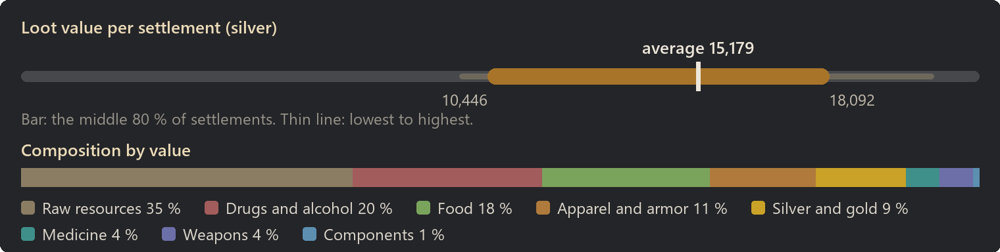
Raw resources: 35 % of the value
| Item | Share of this class | Found in | Average amount |
|---|
| Wood | 27 % | almost always | 1,166 |
| Steel | 20 % | almost always | 561 |
| Cloth | 11 % | almost always | 377 |
| Plainleather | 8 % | 99 % | 201 |
| Limestone blocks | 8 % | almost always | 441 |
| Granite blocks | 7 % | almost always | 434 |
| Sheep wool | 7 % | 98 % | 144 |
| Lightleather | 3 % | 95 % | 82 |
Drugs and alcohol: 20 % of the value
| Item | Share of this class | Found in | Average amount |
|---|
| Beer | 23 % | almost always | 58 |
| Wine | 23 % | almost always | 34 |
| Mead | 18 % | almost always | 37 |
| Healing draught | 13 % | 97 % | 7 |
| Immunization draught | 9 % | 89 % | 5 |
| Painkiller draught | 8 % | 87 % | 4 |
| Antitox draught | 5 % | 81 % | 3 |
Food: 18 % of the value
| Item | Share of this class | Found in | Average amount |
|---|
| Potatoes | 19 % | almost always | 463 |
| Corn | 15 % | almost always | 371 |
| Rice | 14 % | almost always | 329 |
| Chicken egg (unfert.) | 12 % | 98 % | 46 |
| Raw honey | 10 % | 93 % | 63 |
| Simple meal | 10 % | almost always | 17 |
| Milk | 8 % | 98 % | 117 |
| Berries | 8 % | almost always | 182 |
Apparel and armor: 11 % of the value
| Item | Share of this class | Found in | Average amount |
|---|
| Leather armor | 26 % | 58 % | 1 |
| Heavy leather armor | 21 % | 45 % | 1 |
| Heavy plate armor | 10 % | 26 % | 0 |
| Plate armor | 9 % | 32 % | 0 |
| Padded armor | 8 % | 64 % | 1 |
| Heavy leather helmet | 5 % | 40 % | 1 |
| Leather helmet | 4 % | 54 % | 1 |
| Padded helmet | 3 % | 56 % | 1 |
Silver and gold: 9 % of the value
| Item | Share of this class | Found in | Average amount |
|---|
| Silver | 66 % | almost always | 943 |
| Gold | 34 % | 91 % | 48 |
Medicine: 4 % of the value
| Item | Share of this class | Found in | Average amount |
|---|
| Herbal medicine | 100 % | almost always | 52 |
Weapons: 4 % of the value
| Item | Share of this class | Found in | Average amount |
|---|
| Shortsword | 11 % | 30 % | 0 |
| Spear | 10 % | 26 % | 0 |
| Longsword | 10 % | 22 % | 0 |
| Dane axe | 9 % | 19 % | 0 |
| Pike | 9 % | 22 % | 0 |
| Claymore | 8 % | 15 % | 0 |
| Halberd | 8 % | 19 % | 0 |
| Heavy mace | 7 % | 26 % | 0 |
| Most valuable possible find |
Value |
Chance per settlement |
| Heavy plate armor |
672 |
26 % |
| Heavy leather armor |
599 |
45 % |
| Leather armor |
515 |
58 % |
| Plate armor |
460 |
32 % |
| Claymore |
317 |
15 % |
Market town
- Tech level: Medieval
- Expected loot value: 36,748 silver on average, usually 31,524 to 41,516
- Containers: about 172, worth 214 silver each on average
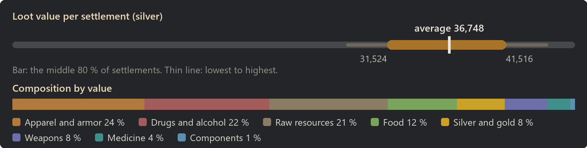
Apparel and armor: 24 % of the value
| Item | Share of this class | Found in | Average amount |
|---|
| Leather armor | 29 % | 99 % | 6 |
| Heavy leather armor | 20 % | almost always | 3 |
| Plate armor | 10 % | 90 % | 2 |
| Padded armor | 9 % | almost always | 6 |
| Heavy plate armor | 9 % | 74 % | 1 |
| Heavy leather helmet | 5 % | 96 % | 3 |
| Leather helmet | 4 % | almost always | 4 |
| Padded helmet | 3 % | 98 % | 4 |
Drugs and alcohol: 22 % of the value
| Item | Share of this class | Found in | Average amount |
|---|
| Wine | 24 % | almost always | 97 |
| Beer | 22 % | almost always | 152 |
| Mead | 18 % | almost always | 96 |
| Healing draught | 13 % | almost always | 18 |
| Immunization draught | 9 % | 98 % | 12 |
| Painkiller draught | 9 % | almost always | 12 |
| Antitox draught | 5 % | almost always | 7 |
Raw resources: 21 % of the value
| Item | Share of this class | Found in | Average amount |
|---|
| Wood | 24 % | almost always | 1,527 |
| Steel | 19 % | almost always | 771 |
| Cloth | 12 % | almost always | 611 |
| Plainleather | 9 % | almost always | 334 |
| Sheep wool | 7 % | almost always | 212 |
| Granite blocks | 6 % | almost always | 562 |
| Limestone blocks | 6 % | almost always | 560 |
| Jade | 4 % | 98 % | 64 |
Food: 12 % of the value
| Item | Share of this class | Found in | Average amount |
|---|
| Potatoes | 19 % | almost always | 780 |
| Corn | 14 % | almost always | 582 |
| Rice | 14 % | almost always | 580 |
| Chicken egg (unfert.) | 13 % | almost always | 86 |
| Raw honey | 10 % | almost always | 112 |
| Simple meal | 9 % | almost always | 28 |
| Milk | 8 % | almost always | 198 |
| Berries | 8 % | almost always | 300 |
Silver and gold: 8 % of the value
| Item | Share of this class | Found in | Average amount |
|---|
| Silver | 66 % | almost always | 2,070 |
| Gold | 34 % | almost always | 107 |
Weapons: 8 % of the value
| Item | Share of this class | Found in | Average amount |
|---|
| Shortsword | 13 % | 92 % | 2 |
| Dane axe | 10 % | 72 % | 1 |
| Longsword | 10 % | 74 % | 1 |
| Spear | 10 % | 89 % | 2 |
| Claymore | 8 % | 61 % | 1 |
| Halberd | 8 % | 70 % | 1 |
| Pike | 7 % | 61 % | 1 |
| Heavy mace | 7 % | 80 % | 1 |
Medicine: 4 % of the value
| Item | Share of this class | Found in | Average amount |
|---|
| Herbal medicine | 100 % | almost always | 150 |
| Most valuable possible find |
Value |
Chance per settlement |
| Heavy plate armor |
672 |
74 % |
| Heavy leather armor |
599 |
almost always |
| Leather armor |
515 |
99 % |
| Plate armor |
460 |
90 % |
| Claymore |
317 |
61 % |
Large market town
- Tech level: Medieval
- Expected loot value: 63,172 silver on average, usually 49,274 to 74,163
- Containers: about 303, worth 208 silver each on average
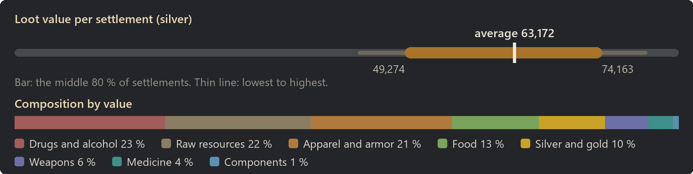
Drugs and alcohol: 23 % of the value
| Item | Share of this class | Found in | Average amount |
|---|
| Wine | 25 % | almost always | 180 |
| Beer | 24 % | almost always | 291 |
| Mead | 19 % | almost always | 182 |
| Healing draught | 12 % | almost always | 28 |
| Painkiller draught | 8 % | almost always | 18 |
| Immunization draught | 8 % | almost always | 18 |
| Antitox draught | 4 % | almost always | 11 |
Raw resources: 22 % of the value
| Item | Share of this class | Found in | Average amount |
|---|
| Wood | 24 % | almost always | 2,786 |
| Steel | 18 % | almost always | 1,319 |
| Cloth | 12 % | almost always | 1,104 |
| Plainleather | 9 % | almost always | 583 |
| Sheep wool | 7 % | almost always | 380 |
| Granite blocks | 6 % | almost always | 997 |
| Limestone blocks | 6 % | almost always | 969 |
| Hops | 5 % | almost always | 491 |
Apparel and armor: 21 % of the value
| Item | Share of this class | Found in | Average amount |
|---|
| Leather armor | 28 % | almost always | 9 |
| Heavy leather armor | 20 % | almost always | 6 |
| Heavy plate armor | 9 % | 88 % | 2 |
| Plate armor | 9 % | 97 % | 3 |
| Padded armor | 9 % | almost always | 9 |
| Heavy leather helmet | 5 % | 98 % | 4 |
| Leather helmet | 4 % | almost always | 6 |
| Robe | 3 % | 98 % | 4 |
Food: 13 % of the value
| Item | Share of this class | Found in | Average amount |
|---|
| Potatoes | 19 % | almost always | 1,430 |
| Corn | 14 % | almost always | 1,075 |
| Rice | 14 % | almost always | 1,039 |
| Chicken egg (unfert.) | 13 % | almost always | 155 |
| Raw honey | 11 % | almost always | 217 |
| Simple meal | 9 % | almost always | 52 |
| Milk | 8 % | almost always | 360 |
| Berries | 8 % | almost always | 555 |
Silver and gold: 10 % of the value
| Item | Share of this class | Found in | Average amount |
|---|
| Silver | 66 % | almost always | 4,196 |
| Gold | 34 % | almost always | 213 |
Weapons: 6 % of the value
| Item | Share of this class | Found in | Average amount |
|---|
| Shortsword | 12 % | 94 % | 3 |
| Dane axe | 11 % | 84 % | 2 |
| Longsword | 11 % | 86 % | 2 |
| Spear | 9 % | 91 % | 2 |
| Claymore | 8 % | 68 % | 1 |
| Pike | 8 % | 78 % | 2 |
| Halberd | 7 % | 76 % | 1 |
| Heavy mace | 7 % | 88 % | 2 |
Medicine: 4 % of the value
| Item | Share of this class | Found in | Average amount |
|---|
| Herbal medicine | 100 % | almost always | 235 |
| Most valuable possible find |
Value |
Chance per settlement |
| Heavy plate armor |
672 |
88 % |
| Heavy leather armor |
599 |
almost always |
| Leather armor |
515 |
almost always |
| Plate armor |
460 |
97 % |
| Claymore |
317 |
68 % |
Fortress city
- Tech level: Medieval
- Expected loot value: 71,731 silver on average, usually 65,355 to 77,890
- Containers: about 309, worth 232 silver each on average
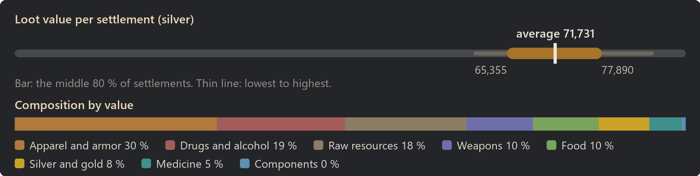
Apparel and armor: 30 % of the value
| Item | Share of this class | Found in | Average amount |
|---|
| Leather armor | 30 % | almost always | 15 |
| Heavy leather armor | 21 % | almost always | 9 |
| Plate armor | 10 % | almost always | 6 |
| Heavy plate armor | 10 % | 98 % | 4 |
| Padded armor | 9 % | almost always | 15 |
| Heavy leather helmet | 5 % | almost always | 7 |
| Leather helmet | 4 % | almost always | 11 |
| Padded helmet | 3 % | almost always | 11 |
Drugs and alcohol: 19 % of the value
| Item | Share of this class | Found in | Average amount |
|---|
| Wine | 19 % | almost always | 130 |
| Beer | 19 % | almost always | 215 |
| Healing draught | 18 % | almost always | 40 |
| Mead | 14 % | almost always | 127 |
| Painkiller draught | 12 % | almost always | 28 |
| Immunization draught | 12 % | almost always | 27 |
| Antitox draught | 7 % | almost always | 15 |
Raw resources: 18 % of the value
| Item | Share of this class | Found in | Average amount |
|---|
| Wood | 26 % | almost always | 2,851 |
| Steel | 20 % | almost always | 1,339 |
| Cloth | 10 % | almost always | 902 |
| Plainleather | 8 % | almost always | 507 |
| Granite blocks | 7 % | almost always | 1,066 |
| Limestone blocks | 7 % | almost always | 1,022 |
| Sheep wool | 7 % | almost always | 318 |
| Jade | 4 % | almost always | 109 |
Weapons: 10 % of the value
| Item | Share of this class | Found in | Average amount |
|---|
| Shortsword | 13 % | almost always | 6 |
| Dane axe | 11 % | 99 % | 4 |
| Longsword | 10 % | 98 % | 4 |
| Spear | 9 % | 98 % | 4 |
| Pike | 8 % | 94 % | 3 |
| Claymore | 8 % | 90 % | 2 |
| Halberd | 8 % | 94 % | 3 |
| Heavy mace | 7 % | 96 % | 4 |
Food: 10 % of the value
| Item | Share of this class | Found in | Average amount |
|---|
| Potatoes | 19 % | almost always | 1,234 |
| Corn | 14 % | almost always | 906 |
| Rice | 14 % | almost always | 887 |
| Chicken egg (unfert.) | 13 % | almost always | 128 |
| Raw honey | 11 % | almost always | 184 |
| Simple meal | 10 % | almost always | 45 |
| Milk | 8 % | almost always | 300 |
| Berries | 8 % | almost always | 460 |
Silver and gold: 8 % of the value
| Item | Share of this class | Found in | Average amount |
|---|
| Silver | 66 % | almost always | 3,601 |
| Gold | 34 % | almost always | 185 |
Medicine: 5 % of the value
| Item | Share of this class | Found in | Average amount |
|---|
| Herbal medicine | 100 % | almost always | 341 |
| Most valuable possible find |
Value |
Chance per settlement |
| Heavy plate armor |
672 |
98 % |
| Heavy leather armor |
599 |
almost always |
| Leather armor |
515 |
almost always |
| Plate armor |
460 |
almost always |
| Claymore |
317 |
90 % |
Camps
| Camp |
Expected value |
Per container |
| Outpost |
1,093 |
257 |
| Logging site |
4,210 |
153 |
| Hunting site |
4,545 |
172 |
| Farming site |
4,720 |
147 |
| Stone mine |
4,737 |
163 |
| Iron mine |
6,530 |
191 |
| Bandit camp |
8,335 |
262 |
Outpost
- Tech level: Medieval
- Expected loot value: 1,093 silver on average, usually 641 to 1,568
- Containers: about 4, worth 257 silver each on average
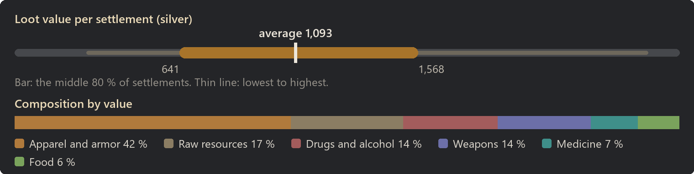
Apparel and armor: 42 % of the value
| Item | Share of this class | Found in | Average amount |
|---|
| Leather armor | 29 % | 30 % | 0 |
| Heavy leather armor | 22 % | 21 % | 0 |
| Plate armor | 13 % | 16 % | 0 |
| Heavy plate armor | 12 % | 10 % | 0 |
| Padded armor | 8 % | 24 % | 0 |
| Heavy leather helmet | 6 % | 15 % | 0 |
| Leather helmet | 4 % | 23 % | 0 |
| Padded helmet | 3 % | 26 % | 0 |
Raw resources: 17 % of the value
| Item | Share of this class | Found in | Average amount |
|---|
| Wood | 30 % | 40 % | 46 |
| Steel | 22 % | 26 % | 21 |
| Cloth | 11 % | 22 % | 14 |
| Granite blocks | 8 % | 26 % | 16 |
| Limestone blocks | 8 % | 26 % | 15 |
| Sheep wool | 8 % | 14 % | 5 |
| Plainleather | 6 % | 13 % | 5 |
| Lightleather | 3 % | 12 % | 3 |
Drugs and alcohol: 14 % of the value
| Item | Share of this class | Found in | Average amount |
|---|
| Healing draught | 37 % | 38 % | 1 |
| Painkiller draught | 24 % | 28 % | 1 |
| Immunization draught | 22 % | 28 % | 1 |
| Antitox draught | 17 % | 24 % | 0 |
Weapons: 14 % of the value
| Item | Share of this class | Found in | Average amount |
|---|
| Dane axe | 13 % | 7 % | 0 |
| Halberd | 12 % | 8 % | 0 |
| Shortsword | 11 % | 10 % | 0 |
| Spear | 11 % | 10 % | 0 |
| Pike | 9 % | 6 % | 0 |
| Longsword | 8 % | 5 % | 0 |
| Heavy mace | 6 % | 6 % | 0 |
| Claymore | 6 % | 4 % | 0 |
Medicine: 7 % of the value
| Item | Share of this class | Found in | Average amount |
|---|
| Herbal medicine | 100 % | 54 % | 8 |
Food: 6 % of the value
| Item | Share of this class | Found in | Average amount |
|---|
| Rice | 20 % | 22 % | 12 |
| Potatoes | 17 % | 20 % | 11 |
| Corn | 12 % | 15 % | 7 |
| Chicken egg (unfert.) | 12 % | 10 % | 1 |
| Raw honey | 11 % | 9 % | 2 |
| Simple meal | 10 % | 20 % | 0 |
| Berries | 8 % | 12 % | 4 |
| Milk | 8 % | 9 % | 3 |
| Most valuable possible find |
Value |
Chance per settlement |
| Heavy plate armor |
672 |
10 % |
| Heavy leather armor |
599 |
21 % |
| Leather armor |
515 |
30 % |
| Plate armor |
460 |
16 % |
| Claymore |
317 |
4 % |
Logging site
- Tech level: Medieval
- Expected loot value: 4,210 silver on average, usually 3,091 to 5,230
- Containers: about 28, worth 153 silver each on average
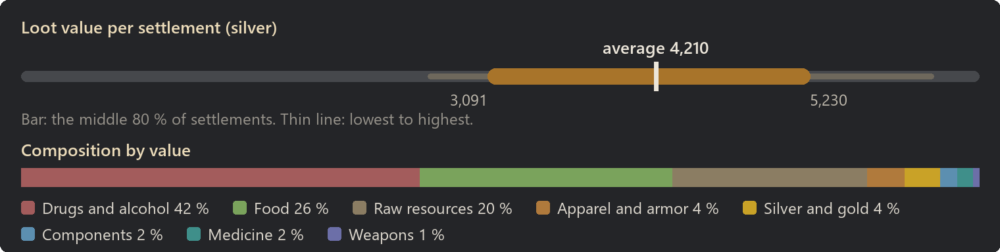
Drugs and alcohol: 42 % of the value
| Item | Share of this class | Found in | Average amount |
|---|
| Wine | 33 % | 98 % | 29 |
| Beer | 32 % | almost always | 47 |
| Mead | 26 % | almost always | 31 |
| Healing draught | 3 % | 32 % | 1 |
| Immunization draught | 2 % | 30 % | 1 |
| Painkiller draught | 2 % | 25 % | 1 |
| Antitox draught | 1 % | 13 % | 0 |
Food: 26 % of the value
| Item | Share of this class | Found in | Average amount |
|---|
| Potatoes | 19 % | 98 % | 196 |
| Chicken egg (unfert.) | 14 % | 84 % | 23 |
| Rice | 14 % | 91 % | 140 |
| Corn | 14 % | 96 % | 137 |
| Raw honey | 10 % | 72 % | 26 |
| Simple meal | 10 % | 96 % | 7 |
| Milk | 8 % | 82 % | 48 |
| Berries | 8 % | 88 % | 76 |
Raw resources: 20 % of the value
| Item | Share of this class | Found in | Average amount |
|---|
| Wood | 22 % | almost always | 155 |
| Steel | 17 % | 64 % | 77 |
| Hops | 12 % | 94 % | 79 |
| Cloth | 10 % | 62 % | 57 |
| Plainleather | 8 % | 56 % | 34 |
| Sheep wool | 8 % | 50 % | 25 |
| Granite blocks | 7 % | 64 % | 67 |
| Limestone blocks | 6 % | 54 % | 57 |
Apparel and armor: 4 % of the value
| Item | Share of this class | Found in | Average amount |
|---|
| Leather armor | 23 % | 6 % | 0 |
| Heavy leather armor | 15 % | 5 % | 0 |
| Mantle | 8 % | 22 % | 0 |
| Chaperon | 7 % | 22 % | 0 |
| Robe | 7 % | 9 % | 0 |
| Plate armor | 6 % | 2 % | 0 |
| Heavy plate armor | 6 % | 2 % | 0 |
| Padded armor | 6 % | 8 % | 0 |
Silver and gold: 4 % of the value
| Item | Share of this class | Found in | Average amount |
|---|
| Silver | 61 % | 57 % | 96 |
| Gold | 39 % | 30 % | 6 |
Components: 2 % of the value
| Item | Share of this class | Found in | Average amount |
|---|
| Grape must | 100 % | 93 % | 31 |
Medicine: 2 % of the value
| Item | Share of this class | Found in | Average amount |
|---|
| Herbal medicine | 100 % | 48 % | 7 |
| Most valuable possible find |
Value |
Chance per settlement |
| Heavy plate armor |
672 |
2 % |
| Heavy leather armor |
599 |
5 % |
| Leather armor |
515 |
6 % |
| Plate armor |
460 |
2 % |
| Claymore |
317 |
under 1 % |
Hunting site
- Tech level: Medieval
- Expected loot value: 4,545 silver on average, usually 2,901 to 5,790
- Containers: about 26, worth 172 silver each on average
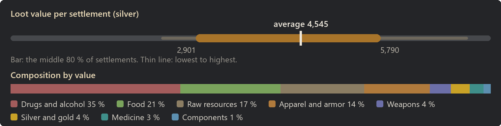
Drugs and alcohol: 35 % of the value
| Item | Share of this class | Found in | Average amount |
|---|
| Wine | 31 % | 98 % | 25 |
| Beer | 30 % | almost always | 40 |
| Mead | 22 % | 99 % | 24 |
| Healing draught | 6 % | 55 % | 2 |
| Immunization draught | 5 % | 44 % | 1 |
| Painkiller draught | 4 % | 38 % | 1 |
| Antitox draught | 2 % | 29 % | 1 |
Food: 21 % of the value
| Item | Share of this class | Found in | Average amount |
|---|
| Potatoes | 20 % | 96 % | 172 |
| Corn | 14 % | 94 % | 117 |
| Rice | 13 % | 88 % | 112 |
| Chicken egg (unfert.) | 13 % | 81 % | 17 |
| Raw honey | 10 % | 74 % | 23 |
| Simple meal | 10 % | 94 % | 6 |
| Milk | 9 % | 82 % | 45 |
| Berries | 8 % | 86 % | 67 |
Raw resources: 17 % of the value
| Item | Share of this class | Found in | Average amount |
|---|
| Wood | 22 % | 86 % | 142 |
| Steel | 17 % | 65 % | 69 |
| Cloth | 11 % | 66 % | 58 |
| Hops | 10 % | 84 % | 63 |
| Plainleather | 9 % | 59 % | 34 |
| Sheep wool | 8 % | 52 % | 23 |
| Limestone blocks | 7 % | 64 % | 63 |
| Granite blocks | 7 % | 64 % | 58 |
Apparel and armor: 14 % of the value
| Item | Share of this class | Found in | Average amount |
|---|
| Leather armor | 30 % | 34 % | 0 |
| Heavy leather armor | 19 % | 22 % | 0 |
| Padded armor | 10 % | 36 % | 0 |
| Plate armor | 10 % | 16 % | 0 |
| Heavy plate armor | 7 % | 8 % | 0 |
| Heavy leather helmet | 6 % | 22 % | 0 |
| Leather helmet | 4 % | 21 % | 0 |
| Padded helmet | 3 % | 29 % | 0 |
Weapons: 4 % of the value
| Item | Share of this class | Found in | Average amount |
|---|
| Claymore | 13 % | 10 % | 0 |
| Pike | 12 % | 11 % | 0 |
| Shortsword | 9 % | 10 % | 0 |
| Halberd | 9 % | 9 % | 0 |
| Longsword | 8 % | 8 % | 0 |
| Dane axe | 8 % | 8 % | 0 |
| Spear | 7 % | 10 % | 0 |
| Mace | 6 % | 12 % | 0 |
Silver and gold: 4 % of the value
| Item | Share of this class | Found in | Average amount |
|---|
| Silver | 63 % | 64 % | 110 |
| Gold | 37 % | 30 % | 7 |
Medicine: 3 % of the value
| Item | Share of this class | Found in | Average amount |
|---|
| Herbal medicine | 100 % | 72 % | 13 |
Components: 1 % of the value
| Item | Share of this class | Found in | Average amount |
|---|
| Grape must | 100 % | 85 % | 25 |
| Most valuable possible find |
Value |
Chance per settlement |
| Heavy plate armor |
672 |
8 % |
| Heavy leather armor |
599 |
22 % |
| Leather armor |
515 |
34 % |
| Plate armor |
460 |
16 % |
| Claymore |
317 |
10 % |
Farming site
- Tech level: Medieval
- Expected loot value: 4,720 silver on average, usually 3,072 to 6,145
- Containers: about 32, worth 147 silver each on average
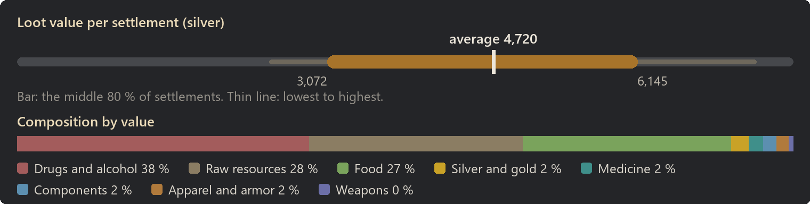
Drugs and alcohol: 38 % of the value
| Item | Share of this class | Found in | Average amount |
|---|
| Wine | 32 % | almost always | 29 |
| Beer | 30 % | almost always | 45 |
| Mead | 25 % | 97 % | 29 |
| Healing draught | 5 % | 51 % | 2 |
| Painkiller draught | 3 % | 40 % | 1 |
| Immunization draught | 3 % | 30 % | 1 |
| Antitox draught | 2 % | 27 % | 0 |
Raw resources: 28 % of the value
| Item | Share of this class | Found in | Average amount |
|---|
| Wood | 24 % | 94 % | 257 |
| Steel | 18 % | 78 % | 126 |
| Cloth | 12 % | 78 % | 99 |
| Plainleather | 9 % | 73 % | 54 |
| Hops | 8 % | 89 % | 75 |
| Limestone blocks | 7 % | 84 % | 105 |
| Granite blocks | 7 % | 82 % | 104 |
| Sheep wool | 7 % | 60 % | 34 |
Food: 27 % of the value
| Item | Share of this class | Found in | Average amount |
|---|
| Potatoes | 20 % | 98 % | 227 |
| Rice | 14 % | 96 % | 167 |
| Corn | 14 % | 97 % | 157 |
| Chicken egg (unfert.) | 13 % | 85 % | 23 |
| Raw honey | 12 % | 82 % | 35 |
| Simple meal | 9 % | 98 % | 8 |
| Milk | 8 % | 84 % | 52 |
| Berries | 8 % | 93 % | 79 |
Silver and gold: 2 % of the value
| Item | Share of this class | Found in | Average amount |
|---|
| Silver | 63 % | 48 % | 64 |
| Gold | 37 % | 18 % | 4 |
Medicine: 2 % of the value
| Item | Share of this class | Found in | Average amount |
|---|
| Herbal medicine | 100 % | 56 % | 9 |
Components: 2 % of the value
| Item | Share of this class | Found in | Average amount |
|---|
| Grape must | 100 % | 90 % | 32 |
Apparel and armor: 2 % of the value
| Item | Share of this class | Found in | Average amount |
|---|
| Leather armor | 22 % | 4 % | 0 |
| Robe | 17 % | 11 % | 0 |
| Mantle | 12 % | 18 % | 0 |
| Chaperon | 10 % | 17 % | 0 |
| Heavy leather helmet | 8 % | 4 % | 0 |
| Heavy leather armor | 7 % | 2 % | 0 |
| Cap | 6 % | 12 % | 0 |
| Padded armor | 6 % | 4 % | 0 |
| Most valuable possible find |
Value |
Chance per settlement |
| Heavy leather armor |
599 |
2 % |
| Leather armor |
515 |
4 % |
| Plate armor |
460 |
under 1 % |
| Claymore |
317 |
2 % |
| Dane axe |
262 |
1 % |
Stone mine
- Tech level: Medieval
- Expected loot value: 4,737 silver on average, usually 3,129 to 6,373
- Containers: about 29, worth 163 silver each on average
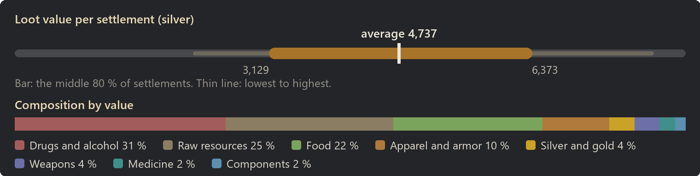
Drugs and alcohol: 31 % of the value
| Item | Share of this class | Found in | Average amount |
|---|
| Wine | 32 % | 97 % | 24 |
| Beer | 29 % | almost always | 36 |
| Mead | 25 % | 96 % | 25 |
| Healing draught | 5 % | 45 % | 1 |
| Painkiller draught | 3 % | 32 % | 1 |
| Immunization draught | 3 % | 35 % | 1 |
| Antitox draught | 2 % | 28 % | 0 |
Raw resources: 25 % of the value
| Item | Share of this class | Found in | Average amount |
|---|
| Wood | 27 % | 94 % | 270 |
| Steel | 19 % | 76 % | 118 |
| Cloth | 10 % | 72 % | 79 |
| Granite blocks | 8 % | 82 % | 100 |
| Limestone blocks | 7 % | 84 % | 98 |
| Plainleather | 7 % | 67 % | 40 |
| Hops | 7 % | 88 % | 65 |
| Sheep wool | 6 % | 55 % | 27 |
Food: 22 % of the value
| Item | Share of this class | Found in | Average amount |
|---|
| Potatoes | 19 % | 94 % | 182 |
| Corn | 15 % | almost always | 141 |
| Rice | 15 % | 95 % | 140 |
| Chicken egg (unfert.) | 14 % | 79 % | 21 |
| Raw honey | 10 % | 68 % | 25 |
| Simple meal | 9 % | 96 % | 6 |
| Berries | 8 % | 82 % | 68 |
| Milk | 8 % | 76 % | 42 |
Apparel and armor: 10 % of the value
| Item | Share of this class | Found in | Average amount |
|---|
| Leather armor | 31 % | 32 % | 0 |
| Heavy leather armor | 19 % | 18 % | 0 |
| Plate armor | 11 % | 12 % | 0 |
| Heavy plate armor | 8 % | 8 % | 0 |
| Padded armor | 7 % | 24 % | 0 |
| Heavy leather helmet | 7 % | 18 % | 0 |
| Leather helmet | 3 % | 18 % | 0 |
| Padded helmet | 3 % | 24 % | 0 |
Silver and gold: 4 % of the value
| Item | Share of this class | Found in | Average amount |
|---|
| Silver | 66 % | 62 % | 120 |
| Gold | 34 % | 25 % | 6 |
Weapons: 4 % of the value
| Item | Share of this class | Found in | Average amount |
|---|
| Longsword | 14 % | 10 % | 0 |
| Spear | 13 % | 13 % | 0 |
| Shortsword | 12 % | 12 % | 0 |
| Dane axe | 10 % | 8 % | 0 |
| Heavy mace | 8 % | 11 % | 0 |
| Pike | 8 % | 8 % | 0 |
| Halberd | 8 % | 6 % | 0 |
| Mace | 5 % | 8 % | 0 |
Medicine: 2 % of the value
| Item | Share of this class | Found in | Average amount |
|---|
| Herbal medicine | 100 % | 70 % | 11 |
Components: 2 % of the value
| Item | Share of this class | Found in | Average amount |
|---|
| Grape must | 100 % | 87 % | 28 |
| Most valuable possible find |
Value |
Chance per settlement |
| Heavy plate armor |
672 |
8 % |
| Heavy leather armor |
599 |
18 % |
| Leather armor |
515 |
32 % |
| Plate armor |
460 |
12 % |
| Claymore |
317 |
4 % |
Iron mine
- Tech level: Medieval
- Expected loot value: 6,530 silver on average, usually 5,117 to 8,168
- Containers: about 34, worth 191 silver each on average
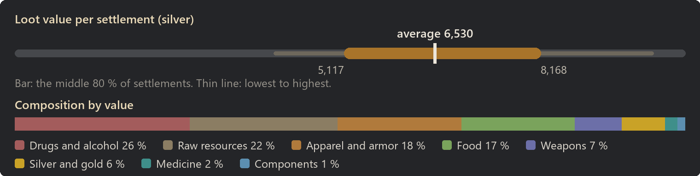
Drugs and alcohol: 26 % of the value
| Item | Share of this class | Found in | Average amount |
|---|
| Wine | 31 % | almost always | 27 |
| Beer | 30 % | almost always | 42 |
| Mead | 25 % | 99 % | 28 |
| Healing draught | 5 % | 52 % | 1 |
| Painkiller draught | 4 % | 40 % | 1 |
| Immunization draught | 4 % | 40 % | 1 |
| Antitox draught | 2 % | 33 % | 1 |
Raw resources: 22 % of the value
| Item | Share of this class | Found in | Average amount |
|---|
| Wood | 29 % | 99 % | 343 |
| Steel | 23 % | 87 % | 172 |
| Granite blocks | 9 % | 92 % | 139 |
| Limestone blocks | 9 % | 87 % | 137 |
| Hops | 7 % | 90 % | 74 |
| Cloth | 7 % | 64 % | 63 |
| Plainleather | 6 % | 57 % | 38 |
| Sheep wool | 4 % | 49 % | 23 |
Apparel and armor: 18 % of the value
| Item | Share of this class | Found in | Average amount |
|---|
| Leather armor | 29 % | 62 % | 1 |
| Heavy leather armor | 20 % | 42 % | 1 |
| Heavy plate armor | 12 % | 22 % | 0 |
| Plate armor | 10 % | 28 % | 0 |
| Padded armor | 10 % | 61 % | 1 |
| Heavy leather helmet | 5 % | 34 % | 0 |
| Leather helmet | 4 % | 46 % | 1 |
| Padded helmet | 3 % | 50 % | 1 |
Food: 17 % of the value
| Item | Share of this class | Found in | Average amount |
|---|
| Potatoes | 19 % | 96 % | 195 |
| Rice | 14 % | 94 % | 136 |
| Corn | 14 % | 97 % | 135 |
| Chicken egg (unfert.) | 13 % | 86 % | 21 |
| Raw honey | 11 % | 74 % | 28 |
| Simple meal | 10 % | 98 % | 7 |
| Milk | 9 % | 86 % | 51 |
| Berries | 8 % | 84 % | 73 |
Weapons: 7 % of the value
| Item | Share of this class | Found in | Average amount |
|---|
| Shortsword | 14 % | 30 % | 0 |
| Dane axe | 12 % | 22 % | 0 |
| Longsword | 11 % | 20 % | 0 |
| Spear | 10 % | 24 % | 0 |
| Pike | 8 % | 18 % | 0 |
| Heavy mace | 7 % | 24 % | 0 |
| Halberd | 6 % | 13 % | 0 |
| Claymore | 5 % | 10 % | 0 |
Silver and gold: 6 % of the value
| Item | Share of this class | Found in | Average amount |
|---|
| Silver | 61 % | 94 % | 257 |
| Gold | 39 % | 54 % | 16 |
Medicine: 2 % of the value
| Item | Share of this class | Found in | Average amount |
|---|
| Herbal medicine | 100 % | 74 % | 12 |
Components: 1 % of the value
| Item | Share of this class | Found in | Average amount |
|---|
| Grape must | 100 % | 89 % | 30 |
| Most valuable possible find |
Value |
Chance per settlement |
| Heavy plate armor |
672 |
22 % |
| Heavy leather armor |
599 |
42 % |
| Leather armor |
515 |
62 % |
| Plate armor |
460 |
28 % |
| Claymore |
317 |
10 % |
Bandit camp
- Tech level: Medieval
- Expected loot value: 8,335 silver on average, usually 7,011 to 9,696
- Containers: about 32, worth 262 silver each on average
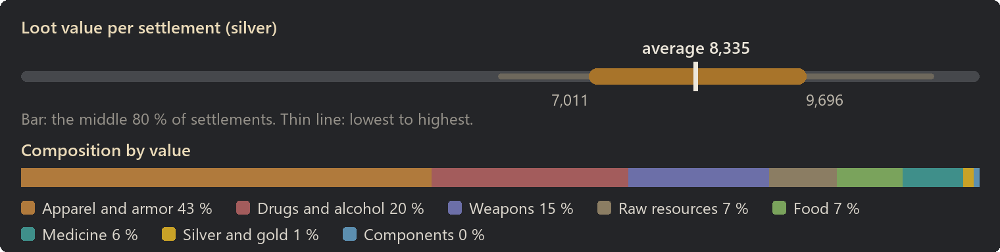
Apparel and armor: 43 % of the value
| Item | Share of this class | Found in | Average amount |
|---|
| Leather armor | 30 % | 93 % | 3 |
| Heavy leather armor | 21 % | 81 % | 2 |
| Heavy plate armor | 11 % | 50 % | 1 |
| Plate armor | 11 % | 68 % | 1 |
| Padded armor | 10 % | 94 % | 3 |
| Heavy leather helmet | 6 % | 73 % | 1 |
| Leather helmet | 4 % | 89 % | 2 |
| Padded helmet | 3 % | 91 % | 2 |
Drugs and alcohol: 20 % of the value
| Item | Share of this class | Found in | Average amount |
|---|
| Healing draught | 22 % | 97 % | 6 |
| Beer | 16 % | almost always | 23 |
| Immunization draught | 15 % | 90 % | 4 |
| Painkiller draught | 14 % | 88 % | 4 |
| Wine | 13 % | 86 % | 11 |
| Mead | 11 % | 89 % | 13 |
| Antitox draught | 8 % | 82 % | 2 |
Weapons: 15 % of the value
| Item | Share of this class | Found in | Average amount |
|---|
| Shortsword | 12 % | 62 % | 1 |
| Longsword | 11 % | 48 % | 1 |
| Dane axe | 10 % | 44 % | 1 |
| Pike | 10 % | 48 % | 1 |
| Spear | 9 % | 52 % | 1 |
| Claymore | 8 % | 33 % | 0 |
| Halberd | 7 % | 38 % | 0 |
| Heavy mace | 7 % | 50 % | 1 |
Raw resources: 7 % of the value
| Item | Share of this class | Found in | Average amount |
|---|
| Wood | 27 % | almost always | 133 |
| Steel | 19 % | 55 % | 59 |
| Cloth | 9 % | 44 % | 36 |
| Granite blocks | 8 % | 60 % | 52 |
| Plainleather | 8 % | 42 % | 22 |
| Limestone blocks | 7 % | 56 % | 47 |
| Hops | 6 % | 62 % | 30 |
| Sheep wool | 5 % | 28 % | 11 |
Food: 7 % of the value
| Item | Share of this class | Found in | Average amount |
|---|
| Potatoes | 19 % | 86 % | 99 |
| Corn | 16 % | almost always | 83 |
| Rice | 14 % | 80 % | 75 |
| Chicken egg (unfert.) | 13 % | 61 % | 11 |
| Simple meal | 9 % | 86 % | 4 |
| Milk | 9 % | 64 % | 27 |
| Raw honey | 9 % | 46 % | 12 |
| Berries | 7 % | 66 % | 35 |
Medicine: 6 % of the value
| Item | Share of this class | Found in | Average amount |
|---|
| Herbal medicine | 100 % | almost always | 53 |
Silver and gold: 1 % of the value
| Item | Share of this class | Found in | Average amount |
|---|
| Silver | 64 % | 52 % | 58 |
| Gold | 36 % | 18 % | 3 |
| Most valuable possible find |
Value |
Chance per settlement |
| Heavy plate armor |
672 |
50 % |
| Heavy leather armor |
599 |
81 % |
| Leather armor |
515 |
93 % |
| Plate armor |
460 |
68 % |
| Claymore |
317 |
33 % |
With World Domination
Without World Domination loot mixed in. With the slider Loot in World Domination settlements below 100 %, general containers get World Domination's loot budget instead, see Compatibility.
| Settlement |
Expected value |
Per container |
| Logging camp |
2,788 |
140 |
| Farm camp |
3,306 |
153 |
| Slave village |
3,421 |
163 |
| War camp |
5,757 |
284 |
| Production village |
8,713 |
182 |
Logging camp
- Tech level: Medieval
- Expected loot value: 2,788 silver on average, usually 2,043 to 3,660
- Containers: about 20, worth 140 silver each on average
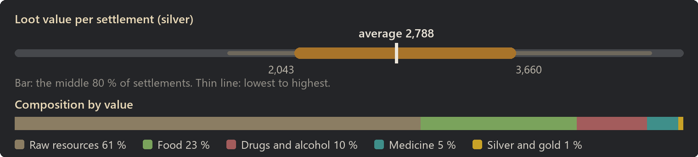
Raw resources: 61 % of the value
| Item | Share of this class | Found in | Average amount |
|---|
| Wood | 29 % | almost always | 404 |
| Steel | 22 % | 93 % | 192 |
| Cloth | 11 % | 86 % | 123 |
| Granite blocks | 8 % | 92 % | 154 |
| Limestone blocks | 8 % | 93 % | 153 |
| Plainleather | 8 % | 80 % | 63 |
| Sheep wool | 7 % | 76 % | 44 |
| Lightleather | 3 % | 64 % | 27 |
Food: 23 % of the value
| Item | Share of this class | Found in | Average amount |
|---|
| Potatoes | 20 % | 88 % | 116 |
| Corn | 14 % | 90 % | 84 |
| Chicken egg (unfert.) | 14 % | 70 % | 13 |
| Rice | 12 % | 80 % | 71 |
| Raw honey | 10 % | 52 % | 16 |
| Simple meal | 10 % | 87 % | 4 |
| Milk | 9 % | 67 % | 30 |
| Berries | 8 % | 68 % | 45 |
Drugs and alcohol: 10 % of the value
| Item | Share of this class | Found in | Average amount |
|---|
| Healing draught | 39 % | 62 % | 2 |
| Painkiller draught | 20 % | 34 % | 1 |
| Immunization draught | 20 % | 40 % | 1 |
| Antitox draught | 12 % | 31 % | 1 |
| Wine | 4 % | 8 % | 1 |
| Beer | 3 % | 8 % | 1 |
| Mead | 2 % | 6 % | 0 |
Medicine: 5 % of the value
| Item | Share of this class | Found in | Average amount |
|---|
| Herbal medicine | 100 % | 72 % | 13 |
| Most valuable possible find |
Value |
Chance per settlement |
| Painkiller draught |
60 |
34 % |
| Immunization draught |
60 |
40 % |
| Healing draught |
60 |
62 % |
| Wine |
20 |
8 % |
| Mead |
15 |
6 % |
Farm camp
- Tech level: Medieval
- Expected loot value: 3,306 silver on average, usually 2,737 to 3,924
- Containers: about 22, worth 153 silver each on average
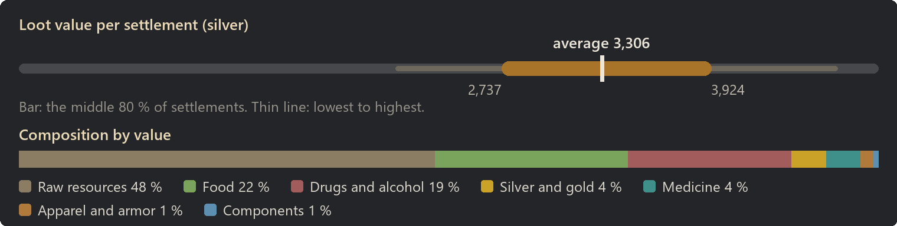
Raw resources: 48 % of the value
| Item | Share of this class | Found in | Average amount |
|---|
| Wood | 26 % | almost always | 351 |
| Steel | 20 % | 90 % | 172 |
| Cloth | 12 % | 88 % | 124 |
| Plainleather | 9 % | 86 % | 71 |
| Granite blocks | 8 % | 90 % | 135 |
| Limestone blocks | 8 % | 90 % | 134 |
| Sheep wool | 7 % | 69 % | 42 |
| Lightleather | 4 % | 66 % | 30 |
Food: 22 % of the value
| Item | Share of this class | Found in | Average amount |
|---|
| Potatoes | 20 % | 90 % | 138 |
| Corn | 14 % | almost always | 93 |
| Chicken egg (unfert.) | 14 % | 70 % | 14 |
| Rice | 12 % | 80 % | 79 |
| Raw honey | 12 % | 65 % | 21 |
| Simple meal | 9 % | 90 % | 4 |
| Milk | 8 % | 68 % | 31 |
| Berries | 8 % | 76 % | 49 |
Drugs and alcohol: 19 % of the value
| Item | Share of this class | Found in | Average amount |
|---|
| Wine | 23 % | 68 % | 7 |
| Beer | 21 % | 76 % | 11 |
| Mead | 16 % | 72 % | 7 |
| Healing draught | 16 % | 55 % | 2 |
| Immunization draught | 10 % | 40 % | 1 |
| Painkiller draught | 9 % | 41 % | 1 |
| Antitox draught | 6 % | 36 % | 1 |
Silver and gold: 4 % of the value
| Item | Share of this class | Found in | Average amount |
|---|
| Silver | 62 % | 56 % | 84 |
| Gold | 38 % | 26 % | 5 |
Medicine: 4 % of the value
| Item | Share of this class | Found in | Average amount |
|---|
| Herbal medicine | 100 % | 74 % | 13 |
Apparel and armor: 1 % of the value
| Item | Share of this class | Found in | Average amount |
|---|
| Robe | 25 % | 12 % | 0 |
| Mantle | 25 % | 22 % | 0 |
| Chaperon | 20 % | 20 % | 0 |
| Cap | 17 % | 20 % | 0 |
| Tabard | 12 % | 18 % | 0 |
| Most valuable possible find |
Value |
Chance per settlement |
| Robe |
138 |
12 % |
| Healing draught |
60 |
55 % |
| Painkiller draught |
60 |
41 % |
| Immunization draught |
60 |
40 % |
| Wine |
20 |
68 % |
Slave village
- Tech level: Medieval
- Expected loot value: 3,421 silver on average, usually 2,671 to 4,233
- Containers: about 21, worth 163 silver each on average
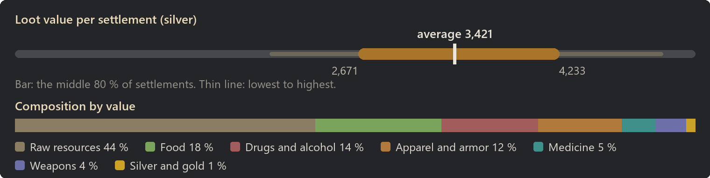
Raw resources: 44 % of the value
| Item | Share of this class | Found in | Average amount |
|---|
| Wood | 28 % | almost always | 348 |
| Steel | 21 % | 86 % | 164 |
| Cloth | 11 % | 86 % | 115 |
| Plainleather | 9 % | 82 % | 63 |
| Granite blocks | 8 % | 91 % | 132 |
| Limestone blocks | 8 % | 86 % | 128 |
| Sheep wool | 7 % | 66 % | 38 |
| Lightleather | 4 % | 65 % | 29 |
Food: 18 % of the value
| Item | Share of this class | Found in | Average amount |
|---|
| Potatoes | 20 % | 90 % | 113 |
| Chicken egg (unfert.) | 15 % | 64 % | 13 |
| Rice | 14 % | 80 % | 81 |
| Corn | 14 % | almost always | 80 |
| Simple meal | 10 % | 86 % | 4 |
| Raw honey | 9 % | 50 % | 14 |
| Milk | 8 % | 61 % | 26 |
| Berries | 8 % | 68 % | 40 |
Drugs and alcohol: 14 % of the value
| Item | Share of this class | Found in | Average amount |
|---|
| Healing draught | 29 % | 66 % | 2 |
| Painkiller draught | 19 % | 56 % | 2 |
| Immunization draught | 16 % | 51 % | 1 |
| Antitox draught | 10 % | 42 % | 1 |
| Wine | 10 % | 33 % | 2 |
| Beer | 9 % | 39 % | 4 |
| Mead | 8 % | 36 % | 3 |
Apparel and armor: 12 % of the value
| Item | Share of this class | Found in | Average amount |
|---|
| Leather armor | 31 % | 30 % | 0 |
| Heavy leather armor | 21 % | 18 % | 0 |
| Padded armor | 11 % | 32 % | 0 |
| Heavy plate armor | 10 % | 8 % | 0 |
| Plate armor | 8 % | 10 % | 0 |
| Leather helmet | 4 % | 21 % | 0 |
| Heavy leather helmet | 4 % | 10 % | 0 |
| Padded helmet | 3 % | 24 % | 0 |
Medicine: 5 % of the value
| Item | Share of this class | Found in | Average amount |
|---|
| Herbal medicine | 100 % | 82 % | 17 |
Weapons: 4 % of the value
| Item | Share of this class | Found in | Average amount |
|---|
| Dane axe | 14 % | 10 % | 0 |
| Longsword | 13 % | 8 % | 0 |
| Shortsword | 12 % | 10 % | 0 |
| Halberd | 8 % | 7 % | 0 |
| Spear | 8 % | 7 % | 0 |
| Heavy mace | 8 % | 8 % | 0 |
| Gladius | 7 % | 10 % | 0 |
| Claymore | 6 % | 3 % | 0 |
Silver and gold: 1 % of the value
| Item | Share of this class | Found in | Average amount |
|---|
| Silver | 70 % | 26 % | 32 |
| Gold | 30 % | 8 % | 1 |
| Most valuable possible find |
Value |
Chance per settlement |
| Heavy plate armor |
672 |
8 % |
| Heavy leather armor |
599 |
18 % |
| Leather armor |
515 |
30 % |
| Plate armor |
460 |
10 % |
| Claymore |
317 |
3 % |
War camp
- Tech level: Medieval
- Expected loot value: 5,757 silver on average, usually 3,612 to 7,617
- Containers: about 20, worth 284 silver each on average
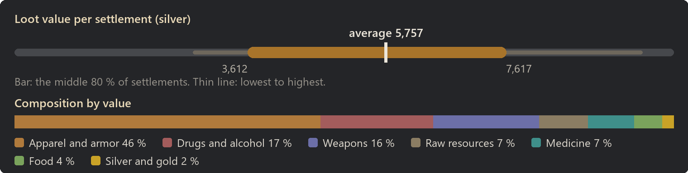
Apparel and armor: 46 % of the value
| Item | Share of this class | Found in | Average amount |
|---|
| Leather armor | 30 % | 88 % | 2 |
| Heavy leather armor | 23 % | 70 % | 1 |
| Padded armor | 10 % | 84 % | 2 |
| Plate armor | 10 % | 48 % | 1 |
| Heavy plate armor | 9 % | 36 % | 0 |
| Heavy leather helmet | 6 % | 66 % | 1 |
| Leather helmet | 4 % | 76 % | 1 |
| Padded helmet | 3 % | 78 % | 2 |
Drugs and alcohol: 17 % of the value
| Item | Share of this class | Found in | Average amount |
|---|
| Healing draught | 33 % | 93 % | 5 |
| Painkiller draught | 20 % | 76 % | 3 |
| Immunization draught | 17 % | 78 % | 3 |
| Antitox draught | 11 % | 70 % | 2 |
| Wine | 9 % | 49 % | 4 |
| Beer | 6 % | 48 % | 5 |
| Mead | 5 % | 44 % | 4 |
Weapons: 16 % of the value
| Item | Share of this class | Found in | Average amount |
|---|
| Shortsword | 13 % | 50 % | 1 |
| Dane axe | 11 % | 38 % | 0 |
| Claymore | 10 % | 26 % | 0 |
| Longsword | 9 % | 34 % | 0 |
| Spear | 9 % | 48 % | 1 |
| Halberd | 8 % | 31 % | 0 |
| Pike | 7 % | 30 % | 0 |
| Heavy mace | 6 % | 36 % | 0 |
Raw resources: 7 % of the value
| Item | Share of this class | Found in | Average amount |
|---|
| Wood | 27 % | 64 % | 96 |
| Steel | 19 % | 43 % | 43 |
| Cloth | 10 % | 42 % | 30 |
| Plainleather | 8 % | 35 % | 17 |
| Limestone blocks | 8 % | 48 % | 37 |
| Granite blocks | 8 % | 48 % | 36 |
| Sheep wool | 7 % | 28 % | 11 |
| Lightleather | 3 % | 24 % | 7 |
Medicine: 7 % of the value
| Item | Share of this class | Found in | Average amount |
|---|
| Herbal medicine | 100 % | 99 % | 40 |
Food: 4 % of the value
| Item | Share of this class | Found in | Average amount |
|---|
| Potatoes | 18 % | 54 % | 39 |
| Chicken egg (unfert.) | 15 % | 32 % | 5 |
| Rice | 15 % | 48 % | 33 |
| Corn | 12 % | 44 % | 27 |
| Raw honey | 11 % | 28 % | 6 |
| Simple meal | 10 % | 50 % | 2 |
| Milk | 9 % | 34 % | 11 |
| Berries | 7 % | 34 % | 15 |
Silver and gold: 2 % of the value
| Item | Share of this class | Found in | Average amount |
|---|
| Silver | 64 % | 57 % | 63 |
| Gold | 36 % | 18 % | 4 |
| Most valuable possible find |
Value |
Chance per settlement |
| Heavy plate armor |
672 |
36 % |
| Heavy leather armor |
599 |
70 % |
| Leather armor |
515 |
88 % |
| Plate armor |
460 |
48 % |
| Claymore |
317 |
26 % |
Production village
- Tech level: Medieval
- Expected loot value: 8,713 silver on average, usually 5,714 to 11,276
- Containers: about 48, worth 182 silver each on average
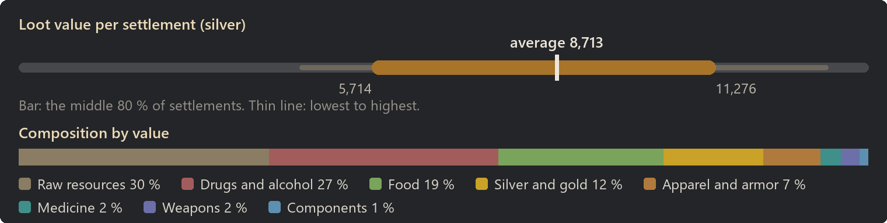
Raw resources: 30 % of the value
| Item | Share of this class | Found in | Average amount |
|---|
| Wood | 25 % | almost always | 538 |
| Steel | 20 % | 98 % | 266 |
| Cloth | 10 % | 97 % | 177 |
| Plainleather | 8 % | 94 % | 101 |
| Granite blocks | 7 % | 94 % | 210 |
| Sheep wool | 7 % | 84 % | 66 |
| Limestone blocks | 7 % | 98 % | 198 |
| Hops | 4 % | 92 % | 90 |
Drugs and alcohol: 27 % of the value
| Item | Share of this class | Found in | Average amount |
|---|
| Wine | 31 % | almost always | 36 |
| Beer | 29 % | almost always | 57 |
| Mead | 22 % | 99 % | 35 |
| Healing draught | 7 % | 74 % | 3 |
| Immunization draught | 4 % | 60 % | 2 |
| Painkiller draught | 4 % | 55 % | 2 |
| Antitox draught | 2 % | 46 % | 1 |
Food: 19 % of the value
| Item | Share of this class | Found in | Average amount |
|---|
| Potatoes | 20 % | almost always | 298 |
| Corn | 15 % | almost always | 224 |
| Rice | 13 % | 98 % | 206 |
| Chicken egg (unfert.) | 13 % | 92 % | 31 |
| Raw honey | 11 % | 86 % | 45 |
| Simple meal | 9 % | almost always | 10 |
| Milk | 8 % | 92 % | 72 |
| Berries | 8 % | 95 % | 112 |
Silver and gold: 12 % of the value
| Item | Share of this class | Found in | Average amount |
|---|
| Silver | 65 % | almost always | 666 |
| Gold | 35 % | 88 % | 36 |
Apparel and armor: 7 % of the value
| Item | Share of this class | Found in | Average amount |
|---|
| Leather armor | 25 % | 28 % | 0 |
| Heavy leather armor | 17 % | 18 % | 0 |
| Plate armor | 12 % | 16 % | 0 |
| Padded armor | 7 % | 28 % | 0 |
| Robe | 6 % | 24 % | 0 |
| Heavy plate armor | 5 % | 6 % | 0 |
| Mantle | 5 % | 48 % | 1 |
| Heavy leather helmet | 5 % | 15 % | 0 |
Medicine: 2 % of the value
| Item | Share of this class | Found in | Average amount |
|---|
| Herbal medicine | 100 % | 90 % | 21 |
Weapons: 2 % of the value
| Item | Share of this class | Found in | Average amount |
|---|
| Shortsword | 15 % | 16 % | 0 |
| Dane axe | 11 % | 8 % | 0 |
| Longsword | 11 % | 10 % | 0 |
| Spear | 11 % | 12 % | 0 |
| Heavy mace | 8 % | 12 % | 0 |
| Pike | 7 % | 7 % | 0 |
| Claymore | 5 % | 4 % | 0 |
| Gladius | 5 % | 8 % | 0 |
Components: 1 % of the value
| Item | Share of this class | Found in | Average amount |
|---|
| Grape must | 100 % | 86 % | 36 |
| Most valuable possible find |
Value |
Chance per settlement |
| Heavy plate armor |
672 |
6 % |
| Heavy leather armor |
599 |
18 % |
| Leather armor |
515 |
28 % |
| Plate armor |
460 |
16 % |
| Claymore |
317 |
4 % |
Simulated on 2026-10-08.